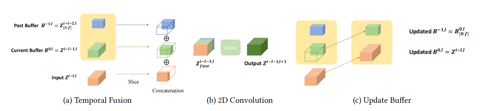
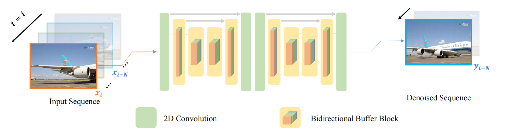
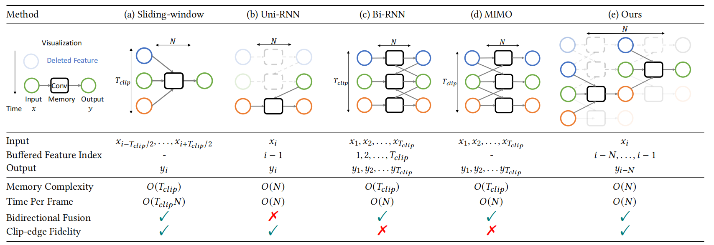
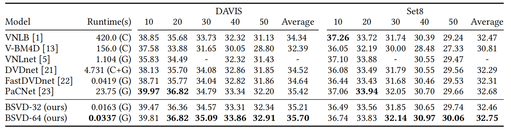
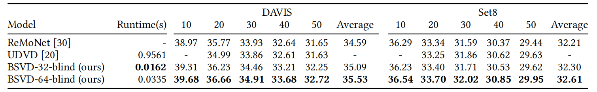
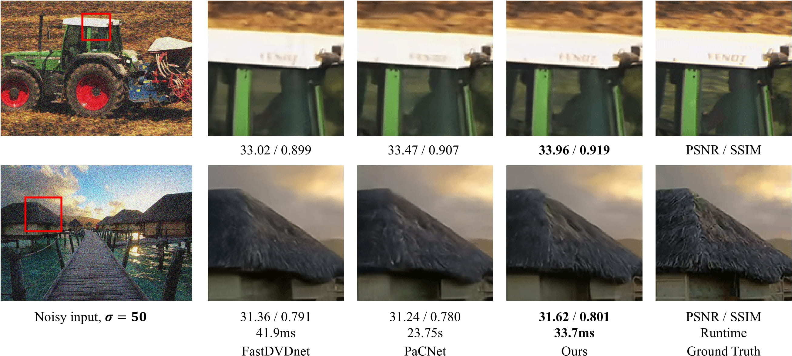
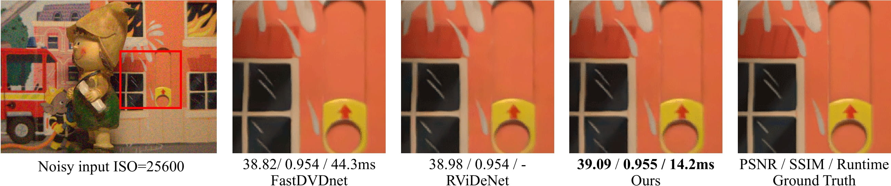

Real-time Streaming Video Denoising with Bidirectional Buffers
-
Chenyang Qi*
HKUST -
Junming Chen*
HKUST -
Xin Yang
HKUST -
Qifeng Chen
HKUST
Poster Video
Abstract
Video streams are delivered continuously to save the cost of storage and device memory. Real-time denoising algorithms are typically adopted on the user device to remove the noise involved during the shooting and transmission of video streams. However, sliding-window-based methods feed multiple input frames for a single output and lack computation efficiency. Recent multi-output inference works propagate the bidirectional temporal feature with a parallel or recurrent framework, which either suffers from performance drops on the temporal edges of clips or can not achieve online inference. In this paper, we propose a Bidirectional Streaming Video Denoising (BSVD) framework, to achieve high-fidelity real-time denoising for streaming videos with both past and future temporal receptive fields. The bidirectional temporal fusion for online inference is considered not applicable in the MoViNet. However, we introduce a novel Bidirectional Buffer Block as the core module of our BSVD, which makes it possible during our pipeline-style inference. In addition, our method is concise and flexible to be utilized in both non-blind and blind video denoising. We compare our model with various state-of-the-art video denoising models qualitatively and quantitatively on synthetic and real noise. Our method outperforms previous methods in terms of restoration fidelity and runtime.
Approach
The forward operation of Bidirectional Buffer Block at time step i.
An overview of our framework.
Analysis
The comparison of computation graph and complexity for different methods.
Quantitative Results
Performance comparison Visualization on on DAVIS test set with noise level 𝜎 = 50
Quantitative comparisons of PSNR (dB) and runtime on the test set of DAVIS and Set8 for gaussian denoising.
Quantitative comparisons of PSNR for blind denoising.
Quantitative comparisons of PSNR and SSIM on the CRVD test set for raw image denosing.
Qualitative Results

BibTeX
@inproceedings{qi2022BSVD,
title={Real-time Streaming Video Denoising with Bidirectional Buffers},
author={Chenyang Qi and Junming Chen and Xin Yang and Qifeng Chen},
booktitle = {ACM MM},
year={2022}
}